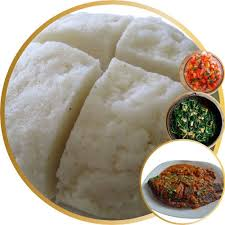

Ugali Recipe

Tasty Ugali Recipe
Here’s an appropriately sized recipe description for making
Ugali, a popular East African staple food, typically made with
maize flour and served with vegetables, stews, or sauces:
Ingredients
- 2 cups maize (corn) flour
- 4 cups water
- A pinch of salt (optional)
Steps
- Pour 4 cups of water into a medium-sized saucepan and bring to a boil.
- Slowly add maize flour to the boiling water while stirring continuously to prevent lumps.
- Continue stirring and pressing the mixture against the sides of the pan until it thickens and starts pulling away from the sides (about 10–15 minutes).
- Cover and let it steam on low heat for 3–5 minutes.
- Mold the ugali into a dome shape using a spoon or wet bowl. Serve hot with vegetables, sauce, or stew.
Home